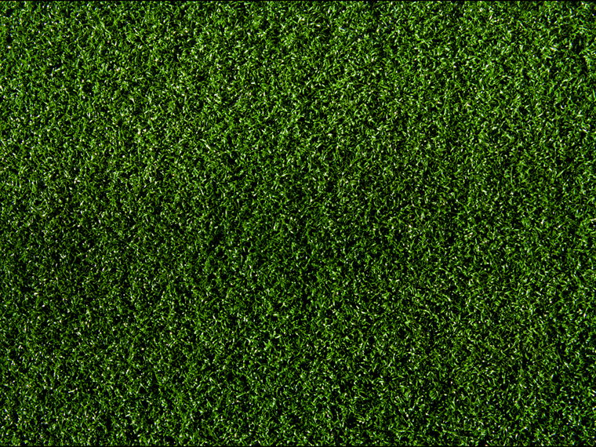

SELF
Tom MacWright
INTERNET NAME: @tmcw
WORK: Mapbox
TURF BY
Morgan Herlocker
TURF
TURFJS.org
a new library
for GEOSPATIAL
ANALYSIS
The lack of interest, the disdain for history is what makes computing not-quite-a-field.- Alan Kay
The history of open source geospatial analysis
1984: Grass GIS, (ineffable)
2000: JTS, the "Java Topology Suite"
2003: GEOS, a port of JTS to C++
2008: Shapely, an interface from GEOS to Python
2011: JSTS, a port of JTS to JavaScript
2014: Turf was born
Take-home lessons
1
low-level libraries EVOLVE SLOWLY
2
everything is a port of JTS
3
 JTS is older than Sophia Grace
JTS is older than Sophia GraceJTS/GEOS/JSTS all show signs of being born before GeoJSON
Existing libraries are big, conjoined pieces
let's try something new
TURF is a new approach to GIS
a GeoJSON native that plays well with Leaflet
lets you do the analysis part of your crazy web maps in the same language, in the same place as the web maps
lets us build intuitive interfaces that make coding less painful and more trippy
an open source project with 10 contributors from 6 companies
(why you should use an open source project)
(besides the things already shouted at you)
sharing your work means more when more people can run it: this matters for analysis
a collection of small parts: every function is a module
need just the code for buffering? require('turf-buffer')
isomorphic: runs in node.js and browsers with the same code
friendly: documentation is the first priority
fast: crunch lots of data in the browser
evolving: improved daily by a dedicated team
but it already does: boolean geometry operations, statistics, spatial interpolation...
TURFJS.org